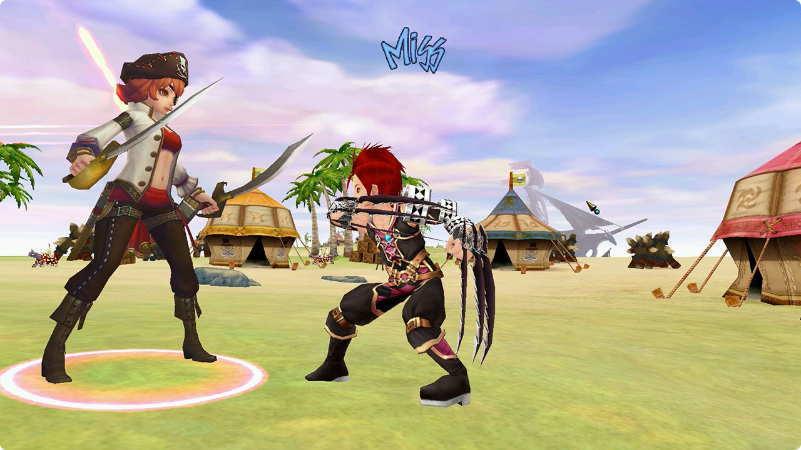

Fiesta Heroes
Preservation Project
Development • Documentation • Preservation

Development
You're probably wondering what is this? Well, it all started when a few members from the private server development community decided to join together and create this project. The goal is to deliver the best foundation to create your own server. We are currently developing, maintaining and fixing any retail / base content within our sets. Imagine being able to choose your set and instantly start developing your server. Whether that be NA2016 (Fiesta), CN2012 (Love Of Light) or even TW2008 (Holy Light 2). We have you covered. You don't need to browse forums or Discord for fixes and updates. The community can report issues via our GitHub. Have you discovered a quest from Blacksmith Hans doesn't work correctly? Report the issue for the following set, and we will make sure (to the best of our ability) it's fixed. That way we can create a stable base for everyone!
Documentation
We have also created our own Documentation site with Docusaurus. The goal is to create a public, and well organized site for guided development. That being server configurations, setups, troubleshooting and modding. Can't remember all the WhoEquip values? Well, this is the document you will visit.
Preservation
We are also hosting our own Archive. We will store things such as tools, code, clients, assets, untouched files, images, etc. Anything and everything can be found on our storage. One central location for everything.
Regards,
We hope you like and support this project. We wish you good luck with your private server ✌️